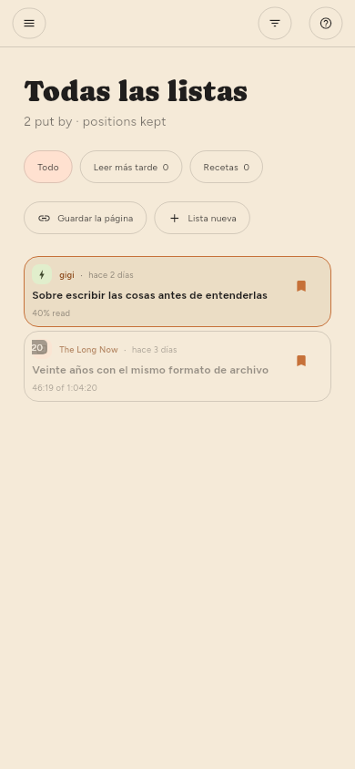

← Encontrar cosas · Contenido · Gestionar las fuentes →
Guardar cosas
Guardar en el lector, o s desde la lista. Los artículos guardados quedan fuera de todo lo que libera espacio.
Listas (solo Premium)
Guardados es una lista, y puedes crear tantas más como quieras: por tema, por lo que piensas hacer con ellos, como sea que ordenes las cosas. Están en la estantería de la izquierda, en Listas, con lo que contiene cada una junto a su nombre.

| Para | Haz esto |
|---|---|
| Crear una | + en el encabezado Listas, o Lista nueva en el menú de guardar |
| Poner algo en ella | Guardar archiva en la lista que se muestra rellena en la estantería |
| Elegir otra lista | El ▾ junto a Guardar, un clic derecho o una pulsación larga |
| Quitarlo otra vez | Guardar de nuevo, en la lista donde está archivado |
| Cambiar el nombre de una o quitarla | Su engranaje en la estantería, igual que un feed |
Guardar va a la última lista que elegiste. Elegir una lista en el menú archiva el artículo y convierte esa lista en la que usa el guardado normal a partir de entonces; la estantería muestra cuál rellenando su marcador. Mientras no elijas otra, es Guardados, que es lo que siempre ha significado guardar.
Un artículo puede estar en varias listas a la vez, y quitarlo de una no toca las demás. Guardados no se puede renombrar ni quitar: el guardado normal tiene que tener un destino, y todos los dispositivos coinciden en ese.
Quitar una lista deja sus artículos, siempre que un feed u otra lista los siga conteniendo: la misma regla que al quitar un feed. Quitar una fuente no toca los artículos guardados y anota de dónde vinieron antes de que la fuente desaparezca.
Las listas viajan entre tus dispositivos, con sus artículos.